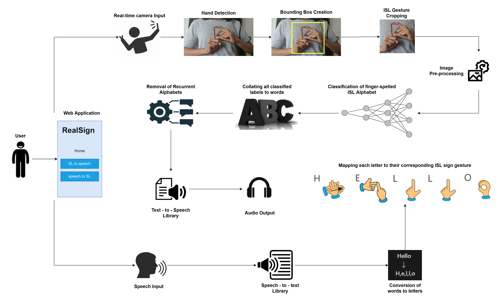
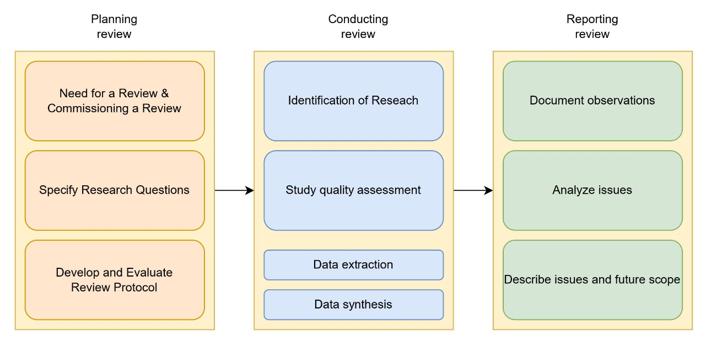
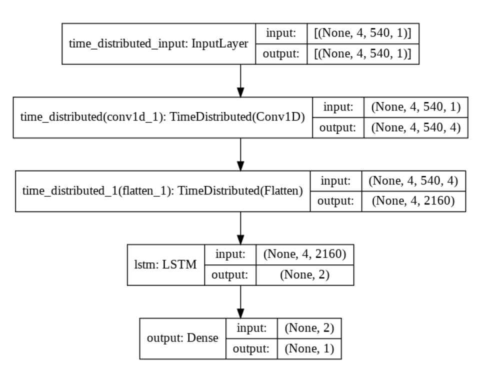

Aaptha Boggaram
PES University, India
Update: Actively seeking Summer 2024 internship!
I am a final year Computer Science undergraduate student at PES University. Currently, I'm interning at Continental Autonomous Mobility and I developed novel algorithms for their use cases "Road Border Estimation" and "Road Type Classification" to work with their Advanced Radar Sensors.
I previously worked as a teaching assistant for the Web Technologies - I course under Dr. Sarasvathi V. Prior to that, I worked as a research assistant at the Centre for Heterogeneous and Intelligent Processing Systems research lab on the "Cardiac Anomaly Detection on wearable devices" project. In 2021, I interned at LivNSense Technologies Pvt Ltd as a project intern and worked on a proof of concept.
My experience and interests lie in the areas of Algorithm Development, Machine Learning, Data Science, Software Engineering, Deep Learning and Computer Vision.

RealSign
An application that performs real-time bidirectional Indian Sign Language translation using Object Detection and Deep Learning.
Cardiac Anomaly Detection
Detection of Suddent Cardiac Arrest (SCA) using Long Short-Term Memory model on the MIT-BIH Arrhythmia Dataset.
Pothole Detection using ML and Nano 33 BLE Sense
A Neural Network algorithm optimized to run on Arduino Nano BLE sensor for pothole detection.
Covid Identification using Lung CT Scans
A python project that helps detect lungs infected with SARS-CoV-2 using Image Processing and Machine Learning.
Mask Detection with CCTV Images
An Object Detection Architecture that detects people with and without masks in CCTV recordings.
Online Project Management System
An Application implemented in MySQL and Java using the Model-View-Controller (MVC) Architecture.
 |
Boggaram, A., Boggaram, A., Sharma, A., Ramanujan, A. S., & Bharathi, R. “RtTSLC: A Framework for Real-time Two-handed Sign Language Translation.” Smart Computing and Communication: 7th International Conference, Proceedings of SmartCom 2023. [In press. Tentative publication date: 9th July 2023] [PDF] |
 |
Boggaram, A., Boggaram, A., Sharma, A., Ramanujan, A. S., & Bharathi, R. "Sign Language Translation Systems: A Systematic Literature Review." International Journal of Software Science and Computational Intelligence (IJSSCI), 2022. [PDF] |
 |
Boggaram, A., Boggaram, A., Sharma, A., & Purnaprajna, M. "Cardiac Anomaly Detection for Wearable Devices" 2021 IEEE 28th International Conference on High Performance Computing, Data and Analytics (HiPC), 13th Student Research Symposium, 2021. [PDF] |